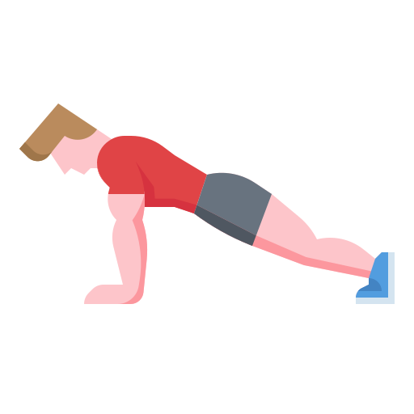

-
Abdominal infra
- Infra
O infra ativará seus principais músculos abdominais, incluindo os oblíquos externos, localizados nas laterais do abdômen. Além disso, ao fazer o abdominal reverso, você estará criando mais força e resistência, pois os músculos trabalham em alta intensidade durante toda a duração do movimento.
-
Abdominal Tradicional
- Reto Abdominal
Como executar o exercício abdominal tradicional de forma correta. Os exercícios abdominais são de extrema importância para o seu corpo. Estes exercícios promovem diversos benefícios, entre eles: estabilidade da coluna lombar, melhora da postura, da respiração além da estabilidade e o equilíbrio corporal.
-
Abdominal Prancha
- Obliquo Externo
Melhoria da tonificação muscular e da performance - Prancha é o exercício ideal para trabalhar a musculatura abdominal, pois a actividade envolve todos os principais grupos musculares, incluindo o transverso abdominal, o recto abdominal, músculo oblíquo externo e os glúteos.
-
Abdominal Remador
- Adutores
Conhecido também como abdominal canivete, é uma atividade que trabalha toda a musculatura do abdômen. Entenda a seguir como executar e sua importância no treino!
-
Abdominal Canivete
- Flexores de Quadril
Abdominal Canivete e meio canivete é uma excelente variação de exercício para trabalhar de forma isométrica Reto abdominal e Oblíquos e, os músculos Flexores do Quadril de forma dinâmica. Existem vários exercícios que podem ser prescritos para trabalhar a musculatura da região abdominal.
-
Flexão
- Triceps
Quando você faz uma flexão de braço, trabalha os músculos do peitoral, tríceps, ombros, abdômen, lombar e, até mesmo, dos membros inferiores. Uma atividade completa para dar um gás no seu treino!